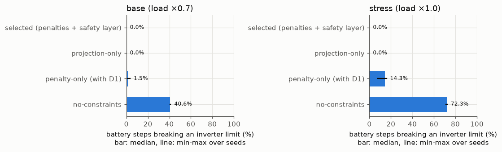

07 Ablations (degradation off)#
Which parts of the DPC design matter? Three variants were trained exactly like the selected candidate (horizon 144, 30-70% dead zone, 1000 steps, seeds 0, 1 and 2), each with one part removed. The protocol was written before any ablation run.
Variant |
Soft SoC and voltage penalties in the loss |
Safety layer (energy limit, P/Q box, S scaling) |
|---|---|---|
selected (reference) |
yes |
yes |
projection-only |
no |
yes |
penalty-only |
yes, plus a soft inverter-limit penalty (decision D1) |
no |
no-constraints |
no |
no |
Degradation and C-rate terms are off in every variant. The policy’s output layer is linear, so without the safety layer nothing bounds P, Q or SoC; nothing is clipped. Steps that break an inverter or SoC limit are physically impossible operation; they are reported as shares, and the objective of such a variant is not achievable performance. The comparison objective is the same for all variants (eq. (16) terms only), so penalty terms are counted even for variants that did not train on them, and the D1 term is not part of it.
D1 is a change from the original code: without it, “penalty-only” would not penalise the limits that the safety layer enforces, and the ablation would mostly measure unlimited reactive power.
Read these results with the following caveats
Preliminary, validation part only. The test part is sealed and has not been evaluated. Every number comes from one network (IEEE 33-bus) and from the validation part, which was also used to select the DPC policy, so the DPC numbers are optimistically biased.
Data. Solar (Utrecht, 2014-2017) and load (Portugal, 2012-2014) are real measurements, but they come from different places and years and share no real weather. The PV size of 3.9 MW was chosen after a no-control check on the training part only (at 2.6 MW no training step exceeded 1.05 pu).
RQ2 was reworded on 2026-11-04, before any controller existed, because extreme ramps and voltage violations rarely coincide in this data (see Decisions).
Training bias. 30% of the training windows contain an extreme solar ramp.
Differences from the proposal’s eq. (16). Degradation and C-rate terms are off in every variant (“degradation off”). A terminal SoC term with a 30-70% dead zone is added and is not in eq. (16).
The safety layer goes beyond the proposal: it also limits P by the stored energy (SoC kept within 10-90%), not only by the inverter limits of eqs. (4)-(7). It does not guarantee voltage feasibility.
Active power use is marginal and not seed-robust. Voltage is regulated mostly with reactive power Q; the selected policy passes the pre-specified “P is used” threshold on 1 of 3 seeds.
The MPC baseline is a convex LinDistFlow MPC with soft voltage limits and a lossless SoC model, not the AC-OPF MPC named in the proposal, and it was not tuned. Speed comparisons are therefore against a convex MPC. The oracle MPC uses exact future data and is an upper bound, not a real controller.
Ablations. “penalty-only” includes a soft inverter-limit penalty that was added on purpose (decision D1). Variants without the safety layer can break the inverter limits; such steps are physically impossible operation and are reported as shares, not as achievable performance.
Corrections to the proposal: a discharging battery enters the net load with a minus sign, and the left side of eq. (9) is P, not 2P. Results computed before the SoC energy limit was added (2026-11-05) are superseded and not shown.
Source: results/m3_ablations.json, commit c780152 (private development history), code differed from that commit: False
Training stability (same pre-specified rule as Experiment 2)
| run | unstable | max grad norm | truncated rerun | minutes |
|---|---|---|---|---|
| penalty-only-no-deg_seed0 | no | 114.3 | no | 22.6 |
| penalty-only-no-deg_seed1 | no | 365.7 | no | 23.4 |
| penalty-only-no-deg_seed2 | no | 671.1 | no | 23.5 |
| projection-only_seed0 | no | 3.5 | no | 23.9 |
| projection-only_seed1 | no | 4.4 | no | 34.6 |
| projection-only_seed2 | no | 4.0 | no | 28.4 |
| no-constraints-no-deg_seed0 | no | 27.4 | no | 19.6 |
| no-constraints-no-deg_seed1 | no | 91.4 | no | 19.7 |
| no-constraints-no-deg_seed2 | no | 155.3 | no | 19.7 |
Over seeds: median [min-max]#
| objective | VVR | steps breaking an inverter limit | steps outside SoC 10-90% | losses (kW) | mean |P| (MW) | mean |Q| (Mvar) | SoC min | SoC max | ||
|---|---|---|---|---|---|---|---|---|---|---|
| regime | variant | |||||||||
| base (load ×0.7) | selected (penalties + safety layer) | 0.00497 [0.00497-0.00498] | 0.000% [0.000%-0.000%] | 0.0% [0.0%-0.0%] | 0.00% [0.00%-0.00%] | 27.8 [27.8-28.1] | 0.0251 [0.0250-0.0252] | 0.400 [0.400-0.404] | 0.31 [0.30-0.31] | 0.73 [0.72-0.74] |
| projection-only | 0.00498 [0.00498-0.00500] | 0.000% [0.000%-0.000%] | 0.0% [0.0%-0.0%] | 0.00% [0.00%-0.00%] | 28.0 [27.9-28.1] | 0.0242 [0.0232-0.0246] | 0.401 [0.401-0.402] | 0.31 [0.30-0.31] | 0.71 [0.71-0.72] | |
| penalty-only (with D1) | 0.00507 [0.00503-0.00508] | 0.000% [0.000%-0.000%] | 1.5% [0.1%-3.5%] | 0.00% [0.00%-0.00%] | 27.5 [27.5-27.7] | 0.0230 [0.0224-0.0240] | 0.390 [0.388-0.393] | 0.31 [0.30-0.31] | 0.71 [0.71-0.72] | |
| no-constraints | 0.00458 [0.00458-0.00460] | 0.000% [0.000%-0.000%] | 40.6% [40.5%-41.2%] | 0.00% [0.00%-0.00%] | 32.2 [32.1-32.4] | 0.0240 [0.0230-0.0250] | 0.468 [0.466-0.471] | 0.30 [0.30-0.30] | 0.71 [0.70-0.72] | |
| stress (load ×1.0) | selected (penalties + safety layer) | 0.01241 [0.01241-0.01242] | 0.000% [0.000%-0.000%] | 0.0% [0.0%-0.0%] | 0.00% [0.00%-0.00%] | 43.1 [43.1-43.2] | 0.0253 [0.0250-0.0256] | 0.462 [0.461-0.463] | 0.29 [0.29-0.29] | 0.74 [0.72-0.74] |
| projection-only | 0.01243 [0.01242-0.01243] | 0.000% [0.000%-0.000%] | 0.0% [0.0%-0.0%] | 0.00% [0.00%-0.00%] | 43.3 [43.2-43.4] | 0.0247 [0.0242-0.0251] | 0.463 [0.463-0.464] | 0.29 [0.28-0.29] | 0.71 [0.71-0.74] | |
| penalty-only (with D1) | 0.01260 [0.01254-0.01262] | 0.000% [0.000%-0.000%] | 14.3% [7.9%-15.9%] | 0.00% [0.00%-0.00%] | 42.9 [42.8-43.0] | 0.0235 [0.0231-0.0241] | 0.444 [0.444-0.450] | 0.29 [0.29-0.29] | 0.72 [0.72-0.72] | |
| no-constraints | 0.00908 [0.00907-0.00910] | 0.000% [0.000%-0.000%] | 72.3% [71.2%-72.4%] | 0.00% [0.00%-0.00%] | 59.3 [59.2-59.7] | 0.0241 [0.0233-0.0250] | 0.696 [0.692-0.700] | 0.29 [0.29-0.29] | 0.72 [0.72-0.74] |

Every seed#
| objective | mean |P| per battery (MW) | mean |Q| per battery (Mvar) | inverter-limit breaks | SoC outside limits | VVR | end-of-day SoC | |||
|---|---|---|---|---|---|---|---|---|---|
| variant | seed | regime | |||||||
| projection-only | 0 | base (load ×0.7) | 0.00498 | 0.0237, 0.0246 | 0.348, 0.455 | 0.00% | 0.00% | 0.000% | 0.31 - 0.34 |
| stress (load ×1.0) | 0.01242 | 0.0246, 0.0248 | 0.434, 0.493 | 0.00% | 0.00% | 0.000% | 0.29 - 0.32 | ||
| 1 | base (load ×0.7) | 0.00500 | 0.0248, 0.0216 | 0.352, 0.452 | 0.00% | 0.00% | 0.000% | 0.32 - 0.36 | |
| stress (load ×1.0) | 0.01243 | 0.0256, 0.0227 | 0.434, 0.493 | 0.00% | 0.00% | 0.000% | 0.29 - 0.33 | ||
| 2 | base (load ×0.7) | 0.00498 | 0.0245, 0.0247 | 0.348, 0.453 | 0.00% | 0.00% | 0.000% | 0.30 - 0.33 | |
| stress (load ×1.0) | 0.01243 | 0.0245, 0.0258 | 0.434, 0.492 | 0.00% | 0.00% | 0.000% | 0.29 - 0.32 | ||
| penalty-only (with D1) | 0 | base (load ×0.7) | 0.00503 | 0.0247, 0.0213 | 0.355, 0.431 | 3.52% | 0.00% | 0.000% | 0.32 - 0.35 |
| stress (load ×1.0) | 0.01254 | 0.0254, 0.0215 | 0.426, 0.473 | 15.91% | 0.00% | 0.000% | 0.30 - 0.34 | ||
| 1 | base (load ×0.7) | 0.00508 | 0.0228, 0.0221 | 0.355, 0.425 | 1.45% | 0.00% | 0.000% | 0.32 - 0.34 | |
| stress (load ×1.0) | 0.01260 | 0.0238, 0.0223 | 0.419, 0.469 | 14.34% | 0.00% | 0.000% | 0.29 - 0.33 | ||
| 2 | base (load ×0.7) | 0.00507 | 0.0246, 0.0234 | 0.358, 0.418 | 0.10% | 0.00% | 0.000% | 0.31 - 0.33 | |
| stress (load ×1.0) | 0.01262 | 0.0250, 0.0232 | 0.421, 0.466 | 7.85% | 0.00% | 0.000% | 0.29 - 0.32 | ||
| no-constraints | 0 | base (load ×0.7) | 0.00460 | 0.0243, 0.0218 | 0.345, 0.587 | 40.47% | 0.00% | 0.000% | 0.32 - 0.36 |
| stress (load ×1.0) | 0.00910 | 0.0242, 0.0224 | 0.508, 0.875 | 71.19% | 0.00% | 0.000% | 0.30 - 0.34 | ||
| 1 | base (load ×0.7) | 0.00458 | 0.0248, 0.0232 | 0.345, 0.590 | 40.64% | 0.00% | 0.000% | 0.32 - 0.35 | |
| stress (load ×1.0) | 0.00907 | 0.0253, 0.0230 | 0.512, 0.881 | 72.25% | 0.00% | 0.000% | 0.30 - 0.34 | ||
| 2 | base (load ×0.7) | 0.00458 | 0.0252, 0.0247 | 0.347, 0.595 | 41.24% | 0.00% | 0.000% | 0.32 - 0.34 | |
| stress (load ×1.0) | 0.00908 | 0.0254, 0.0246 | 0.514, 0.886 | 72.39% | 0.00% | 0.000% | 0.30 - 0.33 |
Reading (descriptive only): with the safety layer, removing the soft penalties changes the objective very little, because on validation the voltages and SoC stay away from their limits. Without the safety layer, the D1 penalty keeps limit violations small but not zero, and the variant without any constraint has the lowest objective only because it exceeds the inverter rating on most steps, which a real inverter cannot do. Validation part, one network; not test results.
No variant left the SoC range 10%-90% (0.00% of battery steps in all variants, seeds and regimes), so these runs do not test the energy-limit part of the safety layer; they test its inverter-limit part.
Scope: the ablations cover constraint handling only (the safety layer and the soft penalties). The differentiable solver, the horizon, the terminal term, the forecast (none) and degradation (off) are not ablated.